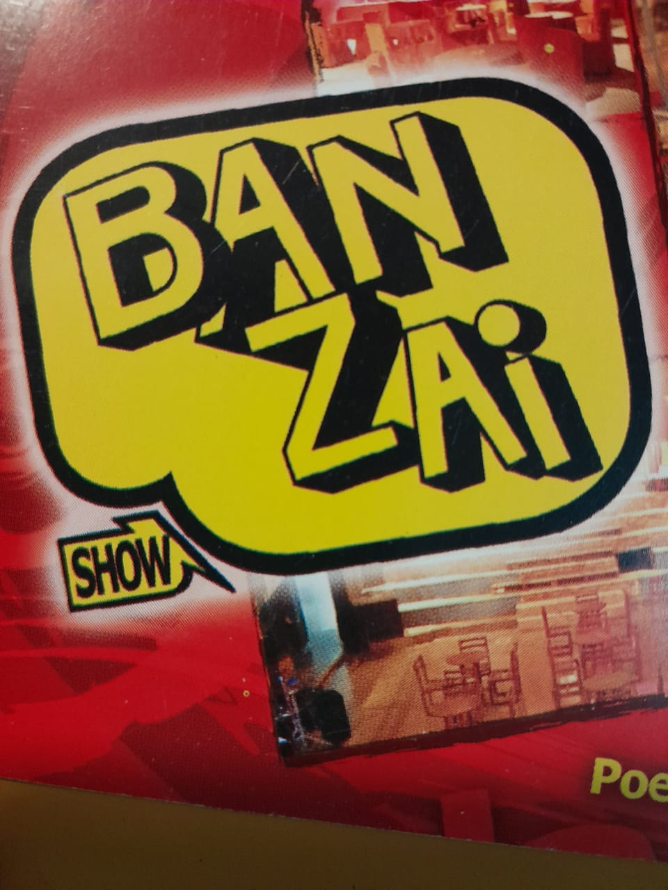
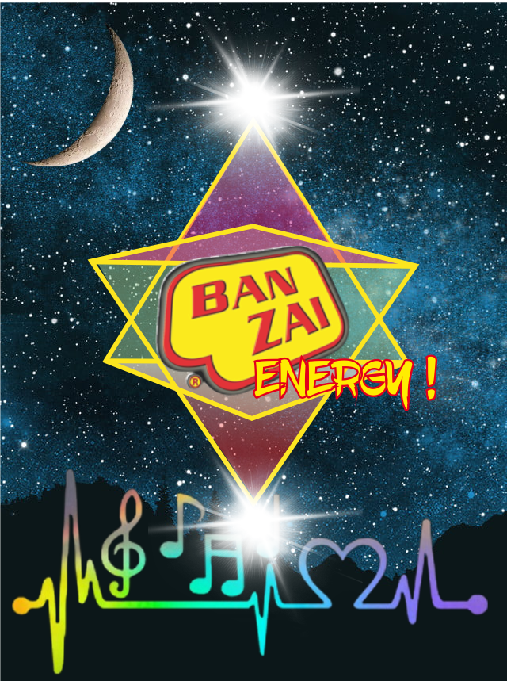

En Av. Latinoamérica 1080, Saldán, nació la primera Ban Zai. Fue un punto de referencia de la escena nocturna cordobesa antes de que la marca viajara a Mina Clavero.
🟢 DOCUMENTADOMina Clavero · Saldán · Córdoba
LAS NOCHES
NO SE BORRAN.
Estamos reconstruyendo la historia de Ban Zai a través de quienes la vivieron: música, fotos, videos, voces y recuerdos. La leyenda vuelve en septiembre de 2026.

MEMORIA / 01
ENERGY / HOYSCROLL ↓
00 / ENTRADAS
Tres puertas. Una leyenda.
Ban Zai no es un solo lugar. Son dos discotecas, tres décadas y un presente que vuelve. Elegí por dónde querés entrar a la historia.
PUERTA 01
La génesis cordobesa. El boliche donde empezó todo antes de llegar a Traslasierra. Av. Latinoamérica 1080.
ÉPOCA · 70s / 80s VER HISTORIA → PUERTA 02La leyenda veraniega. 18 temporadas en Playa Central, la radio al aire libre, los veranos que marcaron a una generación.
ÉPOCA · 1984 — 2002 VER HISTORIA → PUERTA 03El regreso. Quique, Ban Zai Show, el Mina Clavero Music Day y la reapertura confirmada para septiembre de 2026.
TEMPORADA · 2026 VER EL REGRESO →01 / LA HISTORIA
Una historia que
merece ser contada.
Archivo Ban Zai nace para recuperar la memoria de dos lugares que quedaron grabados en generaciones de cordobeses y visitantes.
Ban Zai Saldán y Ban Zai Mina Clavero. Dos nombres, miles de noches y una banda sonora que atravesó décadas. Este sitio está vivo: cada fecha, foto y testimonio que incorporemos va a ayudar a armar el archivo.
🟢 DOCUMENTADO 🟡 EN INVESTIGACIÓN 🔴 PENDIENTE
02 / LÍNEA DEL TIEMPO
Abre Ban Zai Mina Clavero, en Playa Central. Comienzan 18 temporadas que definirían los veranos de una generación.
🟡 EN INVESTIGACIÓNLA MÚSICA SALE A LA PLAYA
Un grupo de amigos comienza a hacer locución en la "Playa de Ban Zai" para eventos al aire libre, armando incluso una radio en la playa. Ese mismo grupo fundaría más tarde FM 104.9 Rockhola y Portneuf Club.
🟢 DOCUMENTADOLA GENERACIÓN DEL 90
Veranos, amigos, DJs, fiestas y canciones. Acá necesitamos tus recuerdos.
🟡 SUMÁ MATERIALFIN DE UNA ETAPA
Terminan las temporadas históricas de Ban Zai Mina Clavero. La marca queda en la memoria colectiva hasta el regreso de 2026.
🔴 POR DOCUMENTAR03 / BAN ZAI HOY · EL REGRESO
La leyenda
continúa.
Después de dos décadas, Ban Zai Mina Clavero vuelve. El verano cordobés recupera su lugar de encuentro.
REAPERTURA · SEPTIEMBRE 2026
—Días
—Horas
—Minutos
—Segundos
Las voces del archivo.
DJ, locutores, barmans, fotógrafos y la gente. Cada ficha es un pedazo de la noche que queremos recuperar.
05 / MAPA HISTÓRICO
Dónde estuvo todo.
Dos lugares, una sola leyenda. Una arqueología de la noche cordobesa.
PUERTA 01
Av. Latinoamérica 1080 · Saldán, Córdoba
La dirección histórica confirmada. La génesis cordobesa del nombre Ban Zai, donde Eduardo Quintana y otros DJs marcaron una época antes de que la marca viajara a Traslasierra.
🟢 UBICACIÓN CONFIRMADA
PUERTA 02
Playa Central · Mina Clavero, Traslasierra
La terraza, la pista, el ingreso sobre la costanera, la Playa de Ban Zai donde en 1986 se armó una radio al aire libre. Vamos a reconstruir cómo era este lugar temporada por temporada.
🟡 EN RECONSTRUCCIÓN FOTOGRÁFICA06 / AYER Y HOY
La línea de tiempo viva.
Todo lo aprobado por el equipo, ordenado por año: videos de aquella época y actuales, fotos y sonidos. Tocá un año y mirá.
Elegí un año para ver el material de esa época.
07 / BAN ZAI RADIO
La música
te lleva de vuelta.
RADIO VIVA
Elegí un año de la línea de tiempo
MEZCLAS PROPIAS · COLA DEL AÑO
Seleccioná un año
Las mezclas de los DJs de la época suenan acá.
LA COMUNIDAD SUENA
Los tracks y aportantes más votados por la comunidad Ban Zai.
TOP TRACKS · MÁS VOTADOS
TOP APORTANTES
08 / EL ÁLBUM
¿Tenés una foto
de ?
Las fotos que aprueba el equipo giran en este carrusel infinito. Tocá las flechas para recorrer la historia, o dejalo correr solo.
FOTO / 001¿QUIÉN SE ACUERDA DE ESTA NOCHE?
VIDEO / 002UN VERANO QUE NO SE OLVIDA
FLYER / 003LA NOCHE EMPEZABA ACÁ
TESTIMONIO / 004"YO ESTUVE AHÍ"
SUMÁ TU MATERIAL / 005¿TU FOTO ACÁ? ↗
09 / VOCES
La historia
la cuentan ellos.
Separamos lo documentado de las historias que se cuentan. Dos capas distintas: una respaldada por fuentes, la otra hecha de memoria viva.
🟢 HISTORIA DOCUMENTADA
Respaldada por fuentes.
Cada dato de esta capa tiene al menos una fuente verificable: una nota de prensa, un registro municipal, un flyer original fechado. No inventamos nada.
"
En 1986 un grupo de amigos fuimos a Mina Clavero y comenzamos a hacer locución en la Playa de Ban Zai...
— FM 104.9 Rockhola
🟡 HISTORIAS QUE SE CUENTAN
Memoria viva de la comunidad.
Acá van los testimonios personales, las anécdotas, los "yo me acuerdo que..." sin respaldo documental. Valiosísimas para reconstruir el alma de Ban Zai.
"
Próximamente, los primeros testimonios de la comunidad Ban Zai.
— Una voz de nuestra historia
10 / PARTICIPÁ
¿VOS TAMBIÉN
¿VOS TAMBIÉN
ESTUVISTE AHÍ?
Mandanos tu recuerdo. Puede ser una foto, un video, un audio, un flyer, una entrada o simplemente una historia.
Demo frontend · el formulario real y la moderación se conectarán al backend. ¿Tenés cuenta de la comunidad o del equipo? Ingresá acá